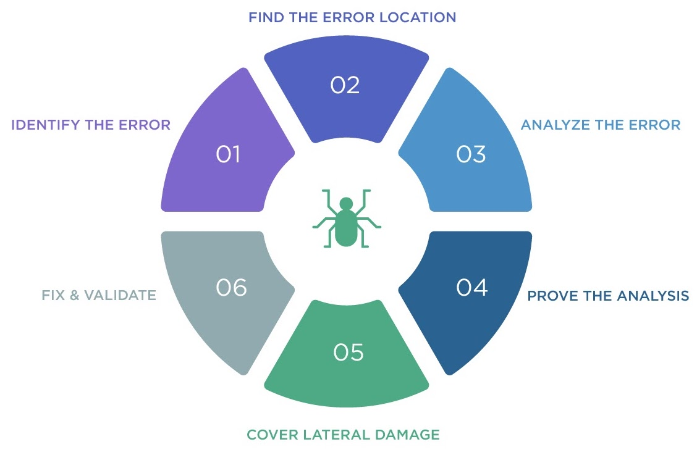
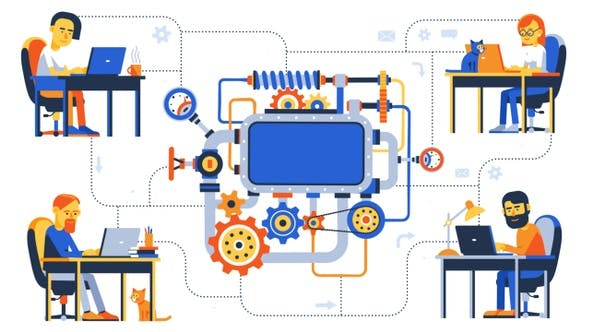

About D3 of NCR
For my fourth and fifth co-op work terms, I was given the opportunity to work as a front-end developer for NCR. I worked remotely with a team based in Nebraska, Omaha. My team is dedicated to the D3 Banking platform, a highly customizable online banking application that is tailored for and sold to a variety of small and large financial institutions. You can learn more about D3 Banking by visiting the website’s about page.
Three important questions to ask during Scrum meetings
The stages of the debugging process

What did my role consist of?
As a front-end developer for the D3 team, I had several responsibilities:
- Attending daily Scrum meetings: Our team had a group call every morning in which each of us would report what we worked on during the previous day, what we have planned for the current day, and any obstacles that we may be facing. I really appreciated these meetings as they gave me the opportunity to exercise my communication skills.
- Bug fixes: I was often assigned tickets which described scenarios in which the banking app is not performing as expected. To tackle these, I would first attempt to replicate the issue to make sure it is still present in the latest version of the application. Then, I would begin the debugging process by finding the source of the bug (usually by tracing the network requests in the Chrome web browser’s DevTools) within the D3 codebase. Once I found the source, I would brainstorm ways to solve the issue and implement a suitable fix.
- Implementing new features: Other tickets I was assigned highlighted a desired feature to be included in the upcoming version of the D3 Banking app, to improve the user interface/experience. Implementing these changes often required discussion with server-side and mobile engineers to ensure proper integration.
- Modifying or adding tests to the codebase: To accompany bug fixes and other code changes, I edited the corresponding test files of the codebase to reflect the newest additions.
- Code review: For each ticket, once I was done making changes to the codebase, I created a pull request on the D3 GitHub page. These pull requests required two members of my team to approve the changes before they can be officially added to the codebase. This was a helpful way to improve my programming skills; senior developers were generous enough to leave feedback on how to make my code more precise or offer an alternative, simpler solution.
The advantages of using the React library

My improvised WFH setup
My work term goals
I had three main goals while working with the D3 Team of NCR:
-
Technological Literacy
As a front-end developer, I worked on the user interface of the D3 banking application, which was built with a variety of frameworks and programming languages. In order to maximize my contributions to this app, I aimed to develop and continuously improve my skills with the appropriate programming languages, libraries, and frameworks (JavaScript/TypeScript, React, React Testing Library, and Jest).
Reflection:
With the help of my mentor, I was able to develop my skills through a variety of online resource he provided, and one-on-one calls in which I was guided on how to work on challenging tickets. As my overall technological literacy skills improved, I was able to write new code and fix bugs with less assistance from others or online resources. -
Teamwork
As I knew I would be working with many other members of the D3 team, I aimed to strengthen my teamwork and collaboration skills to ensure maximum productivity.
Reflection:
To help me achieve this goal, I worked closely with a fellow co-op front-end developer and my mentor on different areas of the D3 Banking app’s user interface. I also made sure that my contributions to the app were well-documented for my team to see, communicated when I needed assistance, and offered my help to my teammates whenever I got the opportunity to. -
Problem Solving
When writing or fixing code, I knew I would inevitably run into problems that do not have a single straightforward solution. I looked at these as opportunities to work on my creativity in programming.
Reflection:
When tackling challenging tickets, I found myself searching the web, reading documentation on our software development kits (SDKs) and libraries, and asking my mentor for advice. With this process repeated throughout my work term, I became more confident in my creative programming skills and felt more comfortable taking on abstract tasks related to the banking app.
Thank you!
Thank you for reading about my co-op experience as a front-end developer for the D3 team of NCR. If you are a co-op student looking into software development positions, I hope that you found this page informative and that you now have a feel of what it’s like to work on a web application with a large team.
Acknowledgments
I would like to thank my supervisor, Mala, for seeing my potential and encouraging me to take on more challenging tickets as the work term progressed. I am grateful for my mentor, Jason S, for his diligence in making sure I am learning new things and his willingness to guide me through difficulties. I am also thankful for Jason C, another co-op student who worked as a front-end developer and became my friend over the work term. We helped each other when faced with challenges and learned a lot from each other. A big thank you goes out to the rest of the D3 team; it was a pleasure to work with all of you. With your continued hard work, I am excited to see what the D3 Banking platform will evolve into.